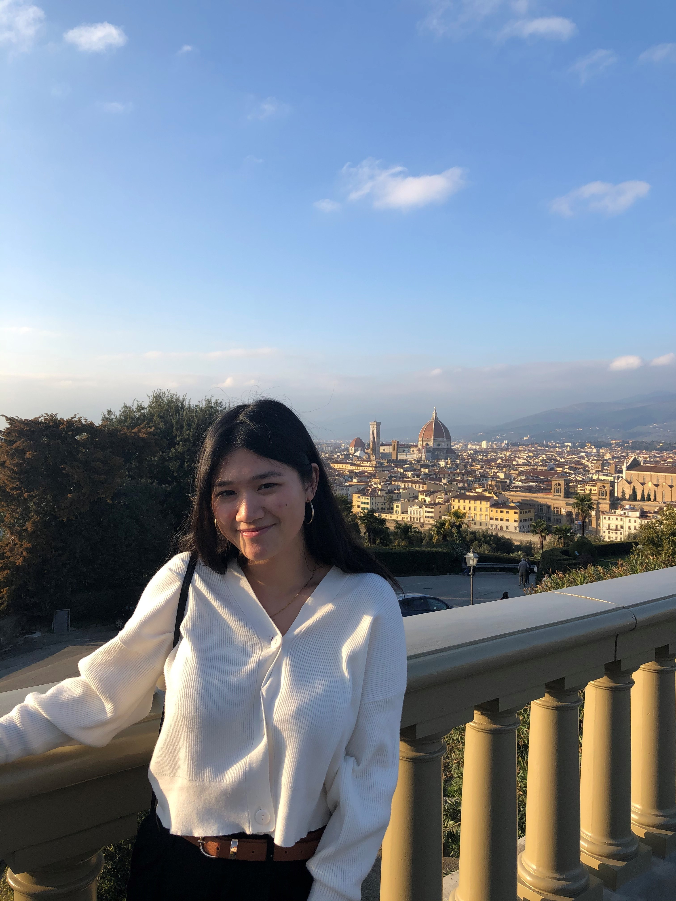

TIFFANY SU
Mechanical Engineer Major & Robotics Minor
at Georgia Insitute of Technology
Hello! I am a rising 4th year at Georgia Tech interested in design and robotic aspects involved in factory automation. I have experience in research, programming, prototyping, CAD, machining, and circuit analysis. Currently, I am seeking an internship where I can apply my experience to a company's design and manufacturing needs.
Research
Robosense
- Redesigned a robotic blimp's structure and hardware to improve movement and to increase the limited wireless control range.
- Designed a circuit in EagleCad that would control the blimp's movement and a gondola that would attach to the blimp and hold its hardware
- Programmed an Arduino to retrieve data from an ultrasonic sensor on altitude and to provide visual feedback that would signal the status of the robotic blimp
Advanced Graphene Battery Technology
- Assisted in the fabrication of graphene-based batteries for performance testing for comparison against lithium-based batteries
- Conducted research on graphene and the developed graphene-based batteries and documented their benefits for possible future applications in a written report
Projects
Creative Decisions and Design Competition
- Collaborated with a team of four to design, fabricate, and test prototypes of a mechatronics machine that integrated Raspberry Pi to compete against other student teams in a competition based on the machine's ability to complete various tasks
- Calibrated machine's dimensions and worked under a strict timeline with a budget of 200 dollars to meet customer requirements
- Troubleshooted issues with prototypes to create a final model with composites that addressed the structural failures of previous models to reduce chances of malfunctions
- Programmed functions for machinery using Python to increase the machine’s ability to move and place objects with accuracy
- The final built robot placed 6th in design review out of 48 teams
Experience
Salesperson @ Nike
- Interacted with customers to determine their needs and sold products catered toward their demands on comfort and performance
- Worked with team members to increase profits and Nike memberships, stock shelves, and maintain the cleanliness of the store
Financial Assistant @ Georgia Institute of Technology
- Recorded student center financial transactions in Microsoft Excel and organized it for future references
- Reviewed data for discrepancies and reported any found to employer
- Delivered financial records and finances of up to ten thousand dollars between departments
Skills
Interests
Outside of the classroom, I like to stay active and involved in my community. I play for Wreck, Georgia Tech's Ultimate Frisbee Team and travel to play in tournaments against other teams. I also enjoy giving back to the community as a shift leader for The Campus Kitchen Project, a non-profit organization that donates food to students in need or local food banks. Moreover, I love being part of Kappa Alpha Theta Fraternity, an empowering group of girls involved in STEM and community service. With this organization, I volunteer to raise money for Court Appointed Special Assoicates (CASA) through fundraisers.
When I have the time, I also enjoy playing the violin and traveling. This past Spring semester I had the opportunity to study abroad in France! Also, I enjoy learning new skills such as programming in different languages and about mechatronics such as the Arduino and Raspberry Pi that I believe will allow me to adapt to the evoloving STEM workplace.
Work in Progress
Although my 2020 Summer internship with Canon Virginia as a manufacturing engineer intern was canceled due to unforseen circumstances, I believe there has been a silver lining to this. This summer I am taking the time to explore my interests, learn new skills, and work on exciting projects! I am currently researching the development of a vehicle simulation framework and flight safety modeling using machine learning for a couple of professors at Georgia Tech. Moreover, I am working on a robotic arm project with an Arduino, utilizing my Java skills to create a couple of programs, and learning about HTML and CSS!